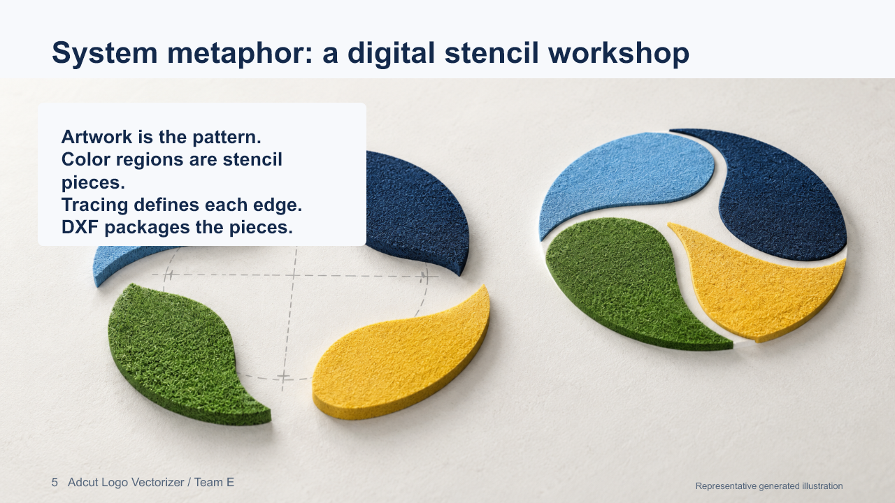

D2 / Design Document
Architecture and system metaphor
This document records Team E's current design for the Adcut Logo Vectorizer. It describes the planned software structure and the shared metaphor guiding implementation. Client-specific export conventions and acceptance tolerances remain open until the team receives representative files and downstream requirements.
System architecture

The design separates the user interface from image processing, geometry construction, validation, and export. This separation allows the processing and export logic to be tested without running the browser interface.
Component responsibilities
| Component | Responsibility | Planned technology |
|---|---|---|
| Interface | Accept artwork and scale settings, report progress and warnings, and provide the matching download. | Streamlit |
| Input adapters | Decode supported images and retain source metadata. PDF page or region selection remains a later design decision. | Pillow and pypdfium2 |
| Region processing | Reduce colors, identify distinct regions, and preserve holes and adjacency. | OpenCV and NumPy |
| Geometry | Construct closed boundaries, manage shared edges, fit suitable lines, circles, and arcs, and apply physical scale. | Python geometry modules |
| Validation and export | Reject invalid or degenerate geometry and serialize supported CAD entities. | ezdxf |
| External acceptance | Confirm that exported files import correctly and work in Adcut's downstream process. | AutoCAD, IGEMS, and client review |
Data flow and design boundaries
- The employee selects customer artwork and enters an explicit physical output dimension and units.
- The input adapter converts the selected file into a consistent image representation.
- Processing creates distinct color regions without merging colors solely because they use the same material.
- The geometry stage creates closed boundaries, retains holes and adjacency, and fits native curves where supported.
- Validation checks closure, finite coordinates, degenerate entities, scale, and unintended duplicate boundaries.
- The export adapter creates a DXF for downstream CAD review. AutoCAD, IGEMS, and the water jet workflow remain outside the application.
DXF is the initial output target. R2000 is only a development default, not a confirmed client requirement. Native DWG export requires a separate feasibility and licensing review. SVG remains a possible fallback.
System metaphor: a digital stencil workshop

The artwork is the pattern. Each distinct color region becomes a stencil piece. Tracing defines the edge of each piece, curve fitting improves that edge for CAD use, and DXF packages the pieces for downstream preparation.
The metaphor gives the team a consistent vocabulary while preserving the system boundary: the application prepares geometry, but it does not operate the water jet or reconstruct details missing from low-quality artwork. Neighboring stencil pieces also help the team reason about shared boundaries so the design does not create unintended duplicate cuts.
Current design decisions
- Python 3.11 and Streamlit provide the initial local Windows application.
- OpenCV and NumPy support color and contour processing.
- Pillow handles raster image decoding; pypdfium2 is planned for later PDF input.
- ezdxf provides DXF serialization using native CAD entities where possible.
- pytest, Ruff, pre-commit, and Windows continuous integration provide development checks.
The current development foundation exports native circle entities and has seven passing automated tests. Image-to-DXF processing, shared-boundary construction, curve fitting, and downstream acceptance testing remain implementation work.
Open decisions requiring evidence
The team still needs permitted sample artwork, accepted CAD examples, target software versions, units, scale conventions, layers, DXF version, supported entities, and agreed error tolerances. These items are intentionally not presented as approved requirements.